Rasch Partial Credit Model with easyRaschBayes
Source:vignettes/pcm-rasch-analysis.Rmd
pcm-rasch-analysis.RmdOverview
This vignette shows a Rasch analysis of a polytomous questionnaire
with easyRaschBayes, using the partial credit model (PCM)
fitted with brms. The data are the PHQ-9 depression
screener, included in the package as phq9.
The functions work with Bayesian Rasch models fitted with
brms: the partial credit model (acat family
with thres(gr = item)), the rating scale model, the
dichotomous Rasch model (bernoulli family), and a hurdle
partial credit model for data with many zero responses (see the hurdle PCM vignette). A code example
for the dichotomous model is available here,
and more detail on Rasch models in brms is in Bürkner (2021).
The frequentist counterpart is easyRasch2,
which uses conditional maximum likelihood and simulation-based critical
values. Its Get
Started vignette analyses the same phq9 data, so the
two can be read side by side. Several functions here follow their
easyRasch2 counterparts, for example
plot_icc() (RMitemICCPlot()) and
plot_targeting() (RMtargeting()). Each
function has documentation and example code, see
?function_name.
The sections follow the four requirements of a Rasch model (Christensen et al. 2013; Christensen et al. 2021):
- Unidimensionality — the items measure a single latent variable.
- Local independence — given the latent variable, item responses are independent of each other.
- Ordered response categories — moving up the latent variable increases the probability of higher categories.
- Invariance (no differential item functioning) — item parameters are the same across relevant groups, here gender.
They are followed by descriptors that are usually reported alongside the four requirements:
- Targeting — how well person and item locations overlap on the latent variable.
- Reliability — how precisely the scale separates respondents.
- Item and person parameters — item thresholds, person locations, and a table from sum score to person location.
Data
phq9 holds 600 respondents to the PHQ-9 (Kroenke et al.
2001) in the U.S. National Health and Nutrition Examination
Survey (NHANES, September 2024 release), with complete responses on all
nine items. Respondents with a sum score of zero were reduced by hand,
so symptom levels are much higher than in the NHANES population. See
?phq9, and the phq9_nhanes data for a random
sample. Each item is scored 0 (“Not at all”), 1 (“Several days”), 2
(“More than half the days”) and 3 (“Nearly every day”).
data(phq9)
items <- phq9[, 1:9]
item_desc <- c(
q1 = "Little interest or pleasure in doing things",
q2 = "Feeling down, depressed, or hopeless",
q3 = "Trouble falling or staying asleep, or sleeping too much",
q4 = "Feeling tired or having little energy",
q5 = "Poor appetite or overeating",
q6 = "Feeling bad about yourself, or that you are a failure",
q7 = "Trouble concentrating on things",
q8 = "Moving or speaking slowly, or being fidgety or restless",
q9 = "Thoughts that you would be better off dead, or of hurting yourself"
)
resp_labels <- c("Not at all", "Several days", "More than half the days",
"Nearly every day")
summary(rowSums(items))
#> Min. 1st Qu. Median Mean 3rd Qu. Max.
#> 0.00 10.00 16.00 15.41 21.00 27.00
table(phq9$gender, useNA = "ifany")
#>
#> Female Male <NA>
#> 426 143 31| item | description |
|---|---|
| q1 | Little interest or pleasure in doing things |
| q2 | Feeling down, depressed, or hopeless |
| q3 | Trouble falling or staying asleep, or sleeping too much |
| q4 | Feeling tired or having little energy |
| q5 | Poor appetite or overeating |
| q6 | Feeling bad about yourself, or that you are a failure |
| q7 | Trouble concentrating on things |
| q8 | Moving or speaking slowly, or being fidgety or restless |
| q9 | Thoughts that you would be better off dead, or of hurting yourself |
Descriptive plots
Before fitting a model it is good to look at the response distributions. The plotting functions take wide data, one column per item.
plot_stackedbars(items)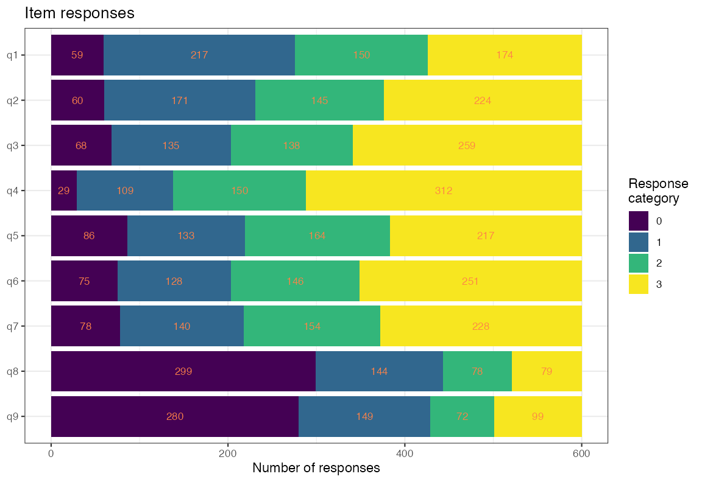
Figure 1. Response distribution per item
plot_tile() and plot_bars() show the same
data in other forms.
Long format
brms needs long data, one row per person and item. The
acat family expects response categories starting at 1, so
we add 1 to every response. The functions in this package score the
responses from 0 again in their output.
df_pcm <- phq9 %>%
rownames_to_column("id") %>%
select(id, gender, starts_with("q")) %>%
pivot_longer(starts_with("q"), names_to = "item",
values_to = "response") %>%
mutate(response = response + 1)
head(df_pcm)
#> # A tibble: 6 × 4
#> id gender item response
#> <chr> <fct> <chr> <dbl>
#> 1 1 Female q1 4
#> 2 1 Female q2 4
#> 3 1 Female q3 4
#> 4 1 Female q4 4
#> 5 1 Female q5 4
#> 6 1 Female q6 4Fitting the PCM
The model is fitted once and saved. The chunk below shows the call, which is not run when the vignette is built. The saved model is loaded instead.
prior_pcm <- prior("normal(0, 3)", class = "Intercept") +
prior("normal(0, 3)", class = "sd", group = "id")
fit_pcm <- brm(
response | thres(gr = item) ~ 1 + (1 | id),
data = df_pcm,
family = acat,
prior = prior_pcm,
chains = 4, cores = 4, iter = 2000
)
saveRDS(fit_pcm, "fits/fit_pcm_phq9.rds")
fit_pcm <- readRDS("fits/fit_pcm_phq9.rds")thres(gr = item) gives each item its own thresholds,
which makes this a partial credit model. (1 | id) is the
person location.
For a rating scale model, where all items share the same distances
between thresholds and differ only in location, drop
thres(gr = item) and add an item effect instead. The
thresholds are then common to all items, and each item’s location is
shifted by its coefficient:
fit_rsm <- brm(
response ~ 1 + item + (1 | id),
data = df_pcm,
family = acat,
prior = prior("normal(0, 3)", class = "Intercept") +
prior("normal(0, 3)", class = "b") +
prior("normal(0, 3)", class = "sd", group = "id"),
chains = 4, cores = 4, iter = 2000
)The functions in this package accept this model in the same way.
loo_compare() can then be used to compare it with the
partial credit model.
1. Unidimensionality
Item fit: conditional infit
infit_statistic() computes infit (and optionally outfit,
see Müller (2020)) mean squares for each
item, conditional on each person’s total score, as in
iarm::out_infit(). For the same item parameters the
observed values are the same as iarm’s. The function compares them with
data replicated from the model, also conditional on the total score.
The ndraws_use argument limits the number of posterior
draws used, which makes exploration faster. For final results, use all
draws (ndraws_use = NULL, the default).
fit_stats <- infit_statistic(fit_pcm, ndraws_use = 500)
infit_results <- infit_post(fit_stats)
infit_results$summary
#> # A tibble: 9 × 4
#> item infit_obs infit_rep infit_ppp
#> <chr> <dbl> <dbl> <dbl>
#> 1 q1 0.95 1.00 0.162
#> 2 q2 0.784 0.998 0
#> 3 q3 1.24 1 1
#> 4 q4 0.833 1 0.01
#> 5 q5 1.08 0.999 0.88
#> 6 q6 0.904 1.00 0.056
#> 7 q7 0.995 1 0.48
#> 8 q8 1.27 1.00 0.998
#> 9 q9 1.33 1.00 1
infit_results$plot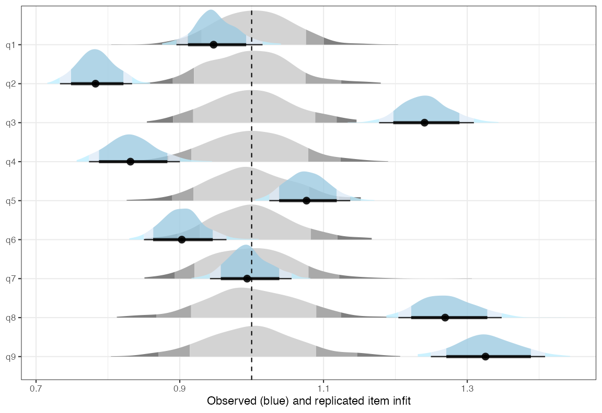
Figure 2. Observed and replicated infit
infit_obs is the observed infit and
infit_rep the infit of replicated data. Values above 1 mean
more variation in the responses than the model expects (underfit), which
can indicate multidimensionality. Values below 1 mean less (overfit),
which can come with local dependence. infit_ppp is the
proportion of posterior draws where the observed infit exceeds the
replicated one. Values near 0.5 indicate good fit, values near 1
underfit, and values near 0 overfit.
The ppp is conservative, because the item parameters are estimated from the same data. In simulations under a fitting model it rarely came close to 0 or 1, so misfit can go undetected. We therefore also use the item-restscore association below, whose ppp was close to uniform in the same simulations. The ppp is not a measure of the size of misfit.
Three items underfit: q9 (thoughts of self-harm, infit
about 1.33), q8 (moving slowly or restless, 1.27) and
q3 (sleep, 1.24), all with infit_ppp near 1.
Two overfit: q2 (feeling down, 0.78) and q4
(feeling tired, 0.83). Given how conservative the ppp is, values this
close to 0 or 1 are clear signals, but they should not be read item by
item. Infit is relative to the other items. An item in a strongly
dependent pair usually overfits, and that makes the remaining items look
more underfit than they would otherwise. q2 is part of the
strongest dependent pair (see local dependence below), so fit should be
checked again after the dependence is dealt with, for example by
removing one item of the pair.
Item-restscore association
item_restscore_statistic() computes Goodman-Kruskal’s
gamma between each item and the rest score (the total score minus the
item), and compares it with the gamma expected under the model given the
total scores (Kreiner 2011). The expected
value differs between items, since it depends on item locations and
targeting. An observed gamma above the expected value means the item
discriminates more than the model implies, and below it less.
ppp is a posterior predictive p-value from data replicated
conditional on each person’s total score. Values near 1 mean a stronger
association than expected, and near 0 a weaker one. p_adj
is two-sided and adjusted for the number of items, so small values flag
a departure in either direction.
rest_stats <- item_restscore_statistic(fit_pcm, ndraws_use = 500)
rest_results <- item_restscore_post(rest_stats)
rest_results$summary
#> # A tibble: 9 × 6
#> item gamma_obs gamma_exp gamma_diff ppp p_adj
#> <chr> <dbl> <dbl> <dbl> <dbl> <dbl>
#> 1 q1 0.658 0.62 0.039 0.938 0.7
#> 2 q2 0.725 0.624 0.101 1 0
#> 3 q3 0.569 0.629 -0.06 0 0.048
#> 4 q4 0.712 0.617 0.095 1 0
#> 5 q5 0.62 0.623 -0.003 0.392 1
#> 6 q6 0.69 0.627 0.063 0.992 0.058
#> 7 q7 0.642 0.624 0.019 0.774 0.996
#> 8 q8 0.55 0.635 -0.085 0 0
#> 9 q9 0.59 0.638 -0.048 0.02 0.25
rest_results$plot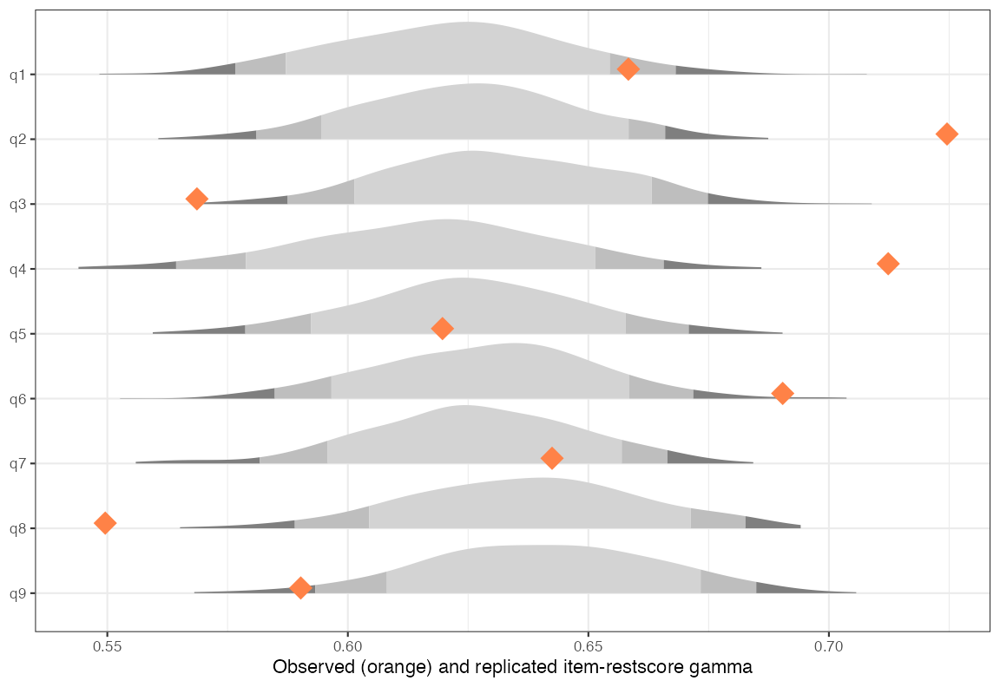
Figure 3. Observed and expected item-restscore gamma
Item-restscore agrees with infit for four of the five items.
q2 and q4 have a stronger association with the
rest score than expected (p_adj near 0), and
q8 and q3 a weaker one. q9 has a
weaker association than expected as well (ppp 0.02), but
after adjustment for the number of items it is not flagged
(p_adj 0.25). q6 leans towards overfit
(ppp 0.99, p_adj 0.06).
Conditional item characteristic curves
plot_icc() compares the model-expected item score with
the observed mean item score in class intervals of the total score.
Persons with the minimum or maximum total score are left out. By default
the respondents are split into class_intervals = 5 groups
of about equal size (method = "quantile"). Other options
are equal-width groups ("width"), one group per total score
("score"), or groups set by hand ("manual"
with score_breaks). Tied total scores can give fewer
quantile groups than requested, and the caption states the grouping that
was used.
plot_icc(fit_pcm)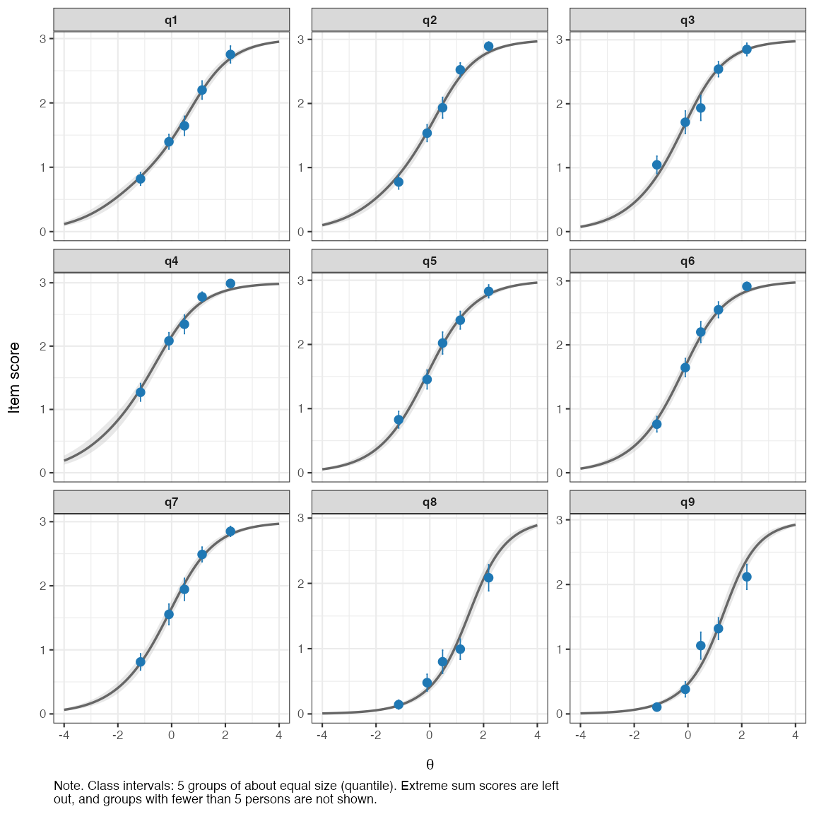
Figure 4. Conditional item characteristic curves
The curves show the same items. The observed points of
q8 and q9 are flatter than the model curve,
above it in the middle and below it at the top, which is what underfit
looks like. q2 and q4 are slightly steeper
than the curve.
Residual PCA
plot_residual_pca() runs a principal components analysis
of the person-item residuals and plots the loadings on the first
residual contrast against the item locations, with the uncertainty of
both.
pca <- plot_residual_pca(fit_pcm, ndraws_use = 500)
pca$eigenvalue
#> # A tibble: 1 × 6
#> eigenvalue_obs eigenvalue_rep eigenvalue_diff ppp var_explained_obs
#> <dbl> <dbl> <dbl> <dbl> <dbl>
#> 1 1.66 1.24 0.424 1 0.181
#> # ℹ 1 more variable: var_explained_rep <dbl>
pca$plot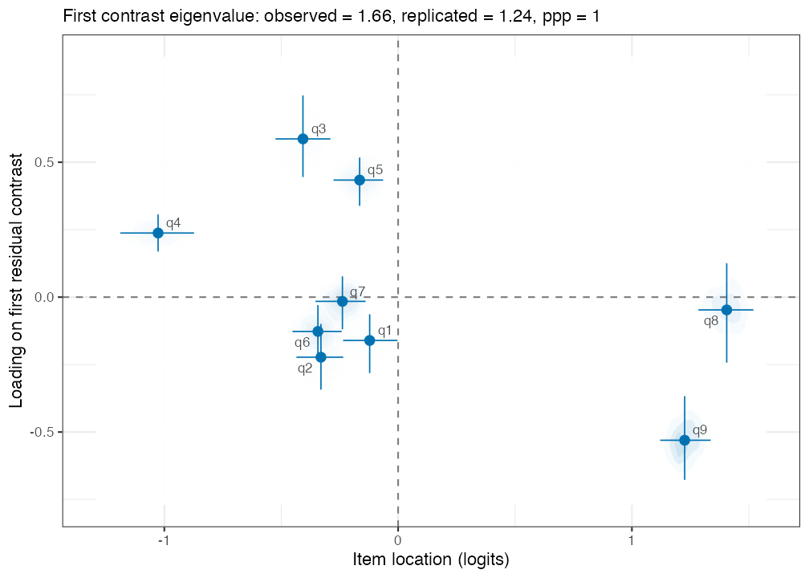
Figure 5. Loadings on the first residual contrast and item locations
ppp in pca$eigenvalue is the proportion of
draws where the observed largest eigenvalue exceeds the replicated one.
Values near 1 suggest more structure in the residuals than the model
implies. Items with loadings of opposite sign on the first contrast are
candidates for a second dimension.
The observed first eigenvalue (1.66) is larger than the replicated
one (1.24) in every draw. The loadings separate q3,
q5 and q4 (sleep, appetite and tiredness) from
q9, q2, q6 and q1
(self-harm thoughts, feeling down, feeling bad about yourself and little
interest). The somatic items share something the model does not capture,
and so do the mood items.
2. Local independence
q3_statistic() computes Yen’s Q3 (Yen 1984),
the correlation between the residuals of each pair of items. Given the
latent variable, residuals should be uncorrelated, and pairs with higher
correlations than the model replicates suggest local dependence (Levy et al.
2009). As for infit and item-restscore, the residuals are
taken from the expected responses given each person’s total score. Given
the total score, a person’s residuals sum to zero, so Q3 centres on
about -1/(k-1), here -0.125, rather than on 0 (Christensen et al.
2017). The replicated values have the same centre, so
q3_diff (observed minus replicated) is the quantity to
read. q3_ppp near 1 flags a pair, and q3_p_adj
adjusts for the 36 pairs, with small values flagging a pair. The dashed
line in the plot is the mean replicated Q3.
q3_stats <- q3_statistic(fit_pcm, ndraws_use = 500)
q3_results <- q3_post(q3_stats)
q3_results$summary
#> # A tibble: 36 × 8
#> item_pair item_1 item_2 q3_obs q3_rep q3_diff q3_ppp q3_p_adj
#> <chr> <chr> <chr> <dbl> <dbl> <dbl> <dbl> <dbl>
#> 1 q1 : q2 q1 q2 0.239 -0.121 0.361 1 0
#> 2 q3 : q5 q3 q5 0.075 -0.139 0.214 1 0
#> 3 q3 : q4 q3 q4 0.062 -0.128 0.19 1 0
#> 4 q7 : q8 q7 q8 0.066 -0.115 0.181 1 0
#> 5 q2 : q9 q2 q9 0.049 -0.123 0.171 1 0
#> 6 q2 : q6 q2 q6 0.016 -0.132 0.148 1 0.006
#> 7 q4 : q5 q4 q5 -0.01 -0.123 0.113 0.996 0.11
#> 8 q6 : q9 q6 q9 -0.003 -0.115 0.112 1 0.072
#> 9 q8 : q9 q8 q9 -0.109 -0.196 0.086 0.958 0.744
#> 10 q1 : q4 q1 q4 -0.023 -0.105 0.082 0.984 0.568
#> # ℹ 26 more rows
q3_results$plot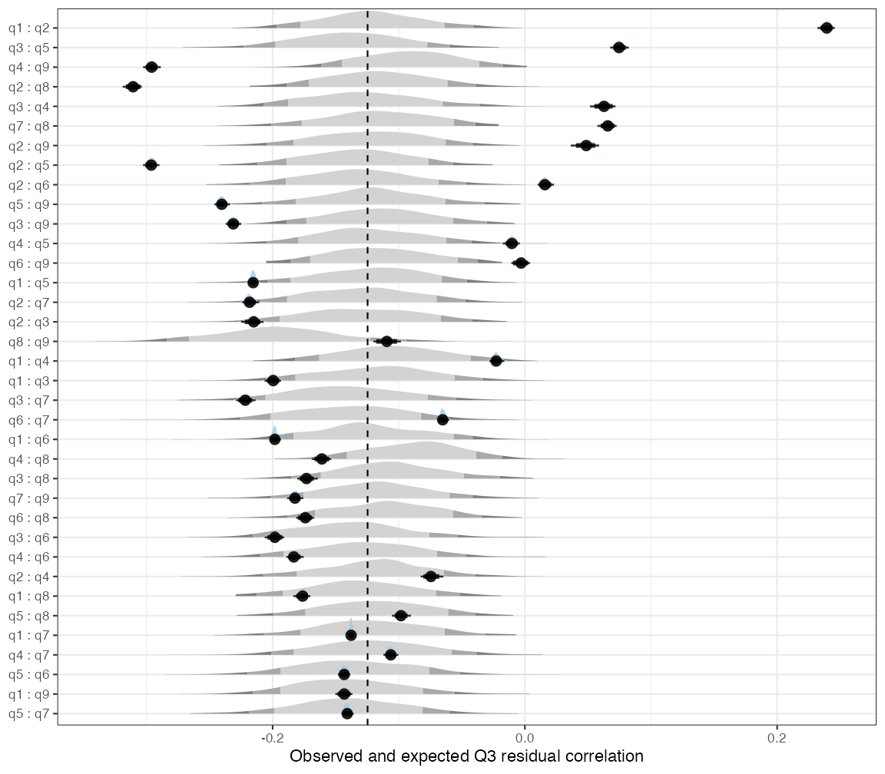
Figure 6. Q3 residual correlations
In the plot, the grey distributions are the replicated Q3 and the points are the observed Q3. The observed values vary little across draws, because the residuals given the total score depend only on the item parameters, which 600 persons estimate precisely. The replicated values also vary through the sampling of new responses, so they are wider. Each pair has its own expected value, so the grey distributions are not all centred on the dashed line.
The largest difference by far is for q1 and
q2, the two core symptoms of depression (little interest
and feeling down), with an observed Q3 of 0.24 against about -0.12
replicated. Next, with differences of about 0.15 to 0.2, are
q3 with q5 and with q4,
q7 with q8, q2 with
q9, and q2 with q6. All six have
q3_p_adj below .05, and they match the two groups in the
residual PCA. q4 with q5 and q6
with q9 follow at about 0.11, with q3_ppp near
1 but q3_p_adj above .05.
Pairs with lower residual correlations than replicated are also worth
a look. When items form two groups, items within a group have residual
correlations above the replicated ones and items from different groups
below. Here the lowest pairs, about 0.12 to 0.21 below the replicated
values, are mostly one somatic and one mood item: q4 with
q9, q2 with q8, q2
with q5, q5 with q9 and
q3 with q9. Together with the positive pairs
and the residual PCA, this points to a somatic and a mood dimension
rather than to dependence between single pairs of items.
3. Ordered response categories
plot_ipf() shows the probability of each response
category across the latent variable, with the uncertainty as a shaded
band. Where two adjacent curves cross is the threshold between them. A
category whose curve is never the highest is never the most likely
response at any location.
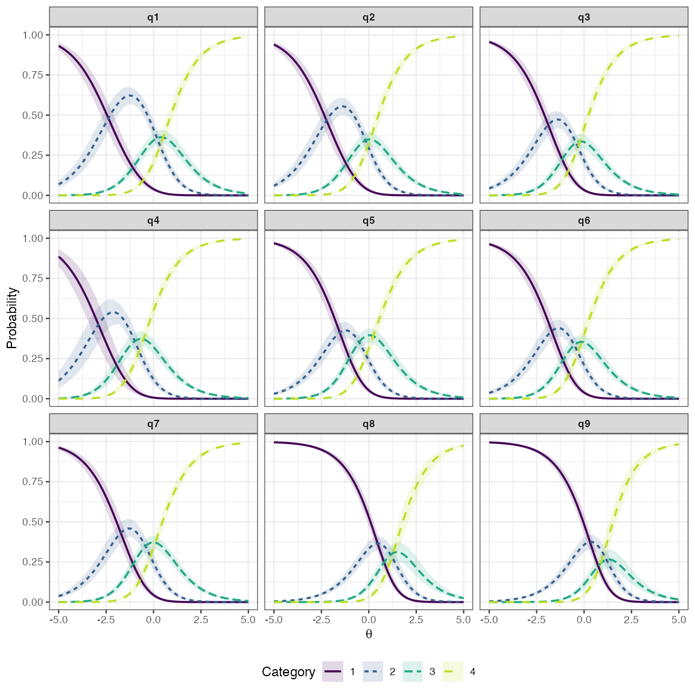
Figure 7. Item category probability functions
item_parameters() reports the thresholds, and whether
they are in order:
ipar <- item_parameters(fit_pcm)
knitr::kable(ipar$locations_wide, digits = 2)| item | t1 | t2 | t3 | location |
|---|---|---|---|---|
| q4 | -2.46 | -0.55 | -0.09 | -1.03 |
| q3 | -1.45 | 0.01 | 0.22 | -0.41 |
| q6 | -1.27 | -0.08 | 0.32 | -0.34 |
| q2 | -1.78 | 0.28 | 0.51 | -0.33 |
| q7 | -1.27 | 0.02 | 0.54 | -0.24 |
| q5 | -1.09 | -0.07 | 0.68 | -0.16 |
| q1 | -1.95 | 0.62 | 0.96 | -0.12 |
| q9 | 0.74 | 1.63 | 1.31 | 1.23 |
| q8 | 0.90 | 1.60 | 1.71 | 1.40 |
ipar$threshold_order
#> # A tibble: 9 × 4
#> item n_thresholds ordered prob_disordered
#> <chr> <int> <lgl> <dbl>
#> 1 q1 3 TRUE 0.0525
#> 2 q2 3 TRUE 0.125
#> 3 q3 3 TRUE 0.162
#> 4 q4 3 TRUE 0.0118
#> 5 q5 3 TRUE 0
#> 6 q6 3 TRUE 0.0243
#> 7 q7 3 TRUE 0.0048
#> 8 q8 3 TRUE 0.336
#> 9 q9 3 FALSE 0.880The thresholds are in order for all items except q9,
where the posterior probability that they are disordered is 0.88.
Thresholds 2 and 3 of q9 are disordered, so “More than half
the days” is never the most likely response to that item. Together with
q8, it is the item fewest people endorse at all.
4. Invariance: differential item functioning
dif_statistic() refits the model with item-specific
differences between two groups, here women and men, and summarises the
posterior of each item’s DIF. A difference in the latent means of the
groups (impact) is estimated separately. DIF is defined relative to the
average item, so it sums to about zero across items, and positive DIF
means the item is easier for the second group (here "Male")
at the same latent level. The 31 respondents without gender are left
out.
df_dif <- df_pcm %>% filter(!is.na(gender))
dif <- dif_statistic(fit_pcm, group_var = gender, data = df_dif, rope = 0,
cores = 4, refresh = 0, seed = 2024)
saveRDS(dif, "fits/dif_gender_phq9.rds")The DIF model takes a few minutes to fit, so as for the main model, the saved result is loaded here.
dif <- readRDS("fits/dif_gender_phq9.rds")
dif$impact
#> # A tibble: 1 × 4
#> estimate sd lower upper
#> <dbl> <dbl> <dbl> <dbl>
#> 1 0.0816 0.174 -0.260 0.418
dif$summary
#> # A tibble: 9 × 8
#> item dif_estimate dif_sd dif_lower dif_upper pd rope_percentage flag
#> <chr> <dbl> <dbl> <dbl> <dbl> <dbl> <dbl> <chr>
#> 1 q1 0.142 0.152 -0.144 0.453 0.835 NA Inconclus…
#> 2 q2 0.312 0.161 0.0204 0.664 0.982 NA DIF likely
#> 3 q3 0.0297 0.150 -0.262 0.328 0.567 NA Inconclus…
#> 4 q4 -0.210 0.156 -0.533 0.0792 0.926 NA Inconclus…
#> 5 q5 -0.280 0.157 -0.603 0.00590 0.971 NA Inconclus…
#> 6 q6 -0.104 0.147 -0.385 0.183 0.776 NA Inconclus…
#> 7 q7 -0.103 0.150 -0.407 0.185 0.762 NA Inconclus…
#> 8 q8 -0.0456 0.154 -0.349 0.259 0.625 NA Inconclus…
#> 9 q9 0.265 0.157 -0.0219 0.589 0.965 NA Inconclus…
dif$plot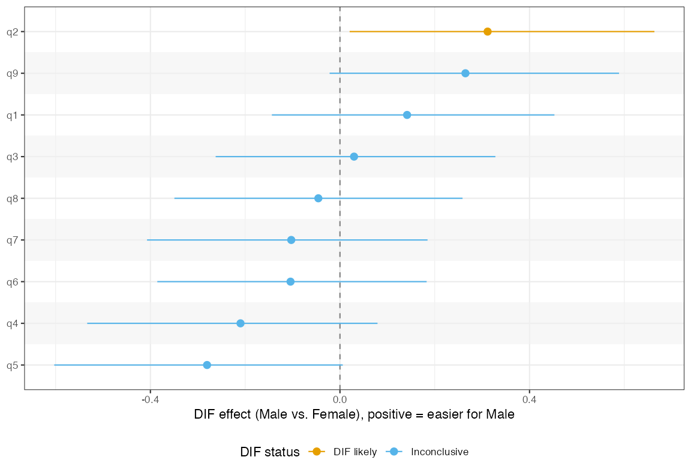
Figure 8. DIF by gender
rope = 0 reports the posteriors without a region of
practical equivalence. Whether a DIF of a given size matters depends on
how the scores are used, for example through its effect on person
locations, so there is no general cut-off.
The conditional item characteristic curves can be split by group, with the partial gamma for each item, which measures the association between item response and group within total-score strata:
plot_icc(fit_pcm, dif_var = gender, dif_data = df_pcm)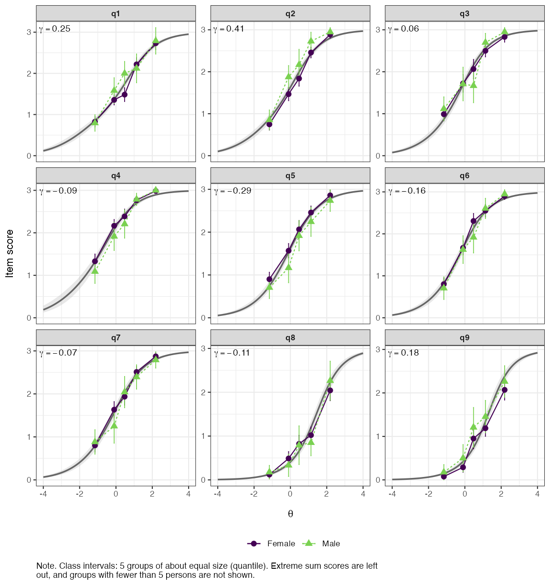
Figure 9. Conditional ICCs by gender
The difference in latent means between men and women (impact) is
small and uncertain, about 0.08 logits with an interval from -0.26 to
0.42. The largest DIF is for q2 (feeling down), about 0.3
logits easier for men: at the same overall level of depression, men
report feeling down more often than women. q5 (appetite) is
harder for men by about the same amount, and q9 easier by a
little less. For these three items the probability of direction is about
0.97, so the sign is fairly certain, while the size is not: the
intervals are about 0.6 logits wide. The partial gamma in the curves
points the same way (0.41 for q2, -0.29 for
q5). Whether differences of this size matter can be judged
by their effect on the person locations, for example by comparing the
persons’ locations with and without the items.
Targeting
plot_targeting() shows person locations above the item
thresholds on the same logit scale. The top panel is the distribution of
person locations (EAP by default, person_estimate = "wle"
for WLE). The bottom panel draws each item as a bar split into the
ranges where each response category is the most likely response, with
the threshold credible intervals below. A category that is never the
most likely response, or disordered thresholds, are marked in red with
the posterior probability of that. panel = "thresholds"
gives a simpler threshold plot.
plot_targeting(fit_pcm, category_labels = resp_labels)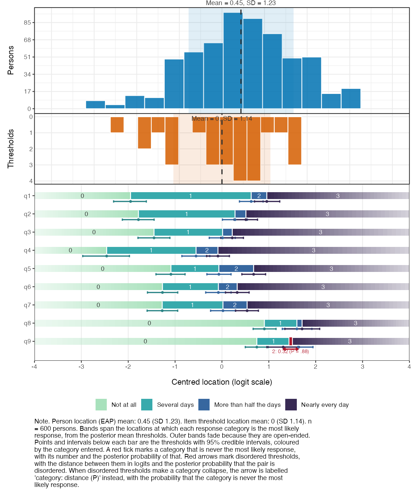
Figure 10. Person-item targeting
The person locations (mean 0.45, SD 1.23) overlap the thresholds
well. This sample was selected to have few respondents without symptoms,
see ?phq9. The two hardest items, q8 and
q9, are located above most persons. On q9,
category 2 collapses, as found above, and the arrow gives the distance
between the disordered thresholds and the probability that the category
is never the most likely response.
Reliability
RMUreliability() gives a Bayesian reliability estimate
based on relative measurement uncertainty (RMU,
Bignardi et al. 2026).
It takes a matrix of person location draws, persons by draws, and
returns the posterior mean with a 95% highest density continuous
interval.
person_draws <- fit_pcm %>%
as_draws_df() %>%
as_tibble() %>%
select(starts_with("r_id")) %>%
t()
RMUreliability(person_draws)
#> rmu_estimate hdci_lowerbound hdci_upperbound .width .point .interval
#> 1 0.8807332 0.8666336 0.8954398 0.95 mean hdciRMU ranges from 0 to 1, with higher values meaning more reliable person locations, and can be read like other reliability coefficients. Here it is 0.88, with an interval from 0.87 to 0.90.
Item and person parameters
knitr::kable(ipar$summary, digits = 2)| item | threshold | location | se | hdci_lower | hdci_upper | n_eff |
|---|---|---|---|---|---|---|
| q1 | 1 | -1.95 | 0.17 | -2.29 | -1.60 | 2860 |
| q1 | 2 | 0.62 | 0.13 | 0.37 | 0.88 | 1178 |
| q1 | 3 | 0.96 | 0.14 | 0.68 | 1.22 | 1834 |
| q2 | 1 | -1.78 | 0.18 | -2.11 | -1.43 | 3081 |
| q2 | 2 | 0.28 | 0.14 | 0.02 | 0.55 | 1289 |
| q2 | 3 | 0.51 | 0.13 | 0.25 | 0.75 | 1393 |
| q3 | 1 | -1.45 | 0.18 | -1.81 | -1.13 | 2611 |
| q3 | 2 | 0.01 | 0.14 | -0.26 | 0.29 | 1973 |
| q3 | 3 | 0.22 | 0.12 | -0.02 | 0.46 | 1147 |
| q4 | 1 | -2.46 | 0.25 | -2.99 | -1.99 | 4220 |
| q4 | 2 | -0.55 | 0.15 | -0.85 | -0.25 | 1532 |
| q4 | 3 | -0.09 | 0.12 | -0.33 | 0.15 | 1385 |
| q5 | 1 | -1.09 | 0.16 | -1.40 | -0.78 | 2156 |
| q5 | 2 | -0.07 | 0.13 | -0.32 | 0.19 | 1824 |
| q5 | 3 | 0.68 | 0.13 | 0.42 | 0.93 | 1460 |
| q6 | 1 | -1.27 | 0.17 | -1.58 | -0.93 | 2441 |
| q6 | 2 | -0.08 | 0.14 | -0.33 | 0.21 | 1481 |
| q6 | 3 | 0.32 | 0.13 | 0.07 | 0.57 | 1402 |
| q7 | 1 | -1.27 | 0.17 | -1.59 | -0.94 | 2594 |
| q7 | 2 | 0.02 | 0.14 | -0.24 | 0.29 | 1712 |
| q7 | 3 | 0.54 | 0.13 | 0.29 | 0.78 | 1262 |
| q8 | 1 | 0.90 | 0.12 | 0.66 | 1.15 | 1206 |
| q8 | 2 | 1.60 | 0.16 | 1.27 | 1.90 | 2093 |
| q8 | 3 | 1.71 | 0.19 | 1.34 | 2.09 | 2838 |
| q9 | 1 | 0.74 | 0.12 | 0.49 | 0.98 | 1223 |
| q9 | 2 | 1.63 | 0.16 | 1.31 | 1.94 | 1852 |
| q9 | 3 | 1.31 | 0.18 | 0.96 | 1.65 | 3054 |
person_parameters() returns EAP and WLE estimates for
each person. score_table maps each total score to a WLE,
for persons who answered every item.
ppar <- person_parameters(fit_pcm)
knitr::kable(ppar$score_table, digits = 2)| sum_score | n | eap | eap_se | wle | wle_se |
|---|---|---|---|---|---|
| 0 | 8 | -2.96 | 0.72 | -4.43 | 1.53 |
| 1 | 4 | -2.51 | 0.64 | -3.21 | 0.91 |
| 2 | 5 | -2.16 | 0.59 | -2.58 | 0.73 |
| 3 | 8 | -1.84 | 0.54 | -2.13 | 0.63 |
| 4 | 11 | -1.58 | 0.51 | -1.78 | 0.57 |
| 5 | 13 | -1.34 | 0.48 | -1.48 | 0.52 |
| 6 | 11 | -1.13 | 0.46 | -1.23 | 0.49 |
| 7 | 25 | -0.93 | 0.44 | -1.01 | 0.46 |
| 8 | 20 | -0.75 | 0.43 | -0.81 | 0.44 |
| 9 | 36 | -0.57 | 0.41 | -0.62 | 0.43 |
| 10 | 16 | -0.41 | 0.40 | -0.45 | 0.42 |
| 11 | 27 | -0.25 | 0.40 | -0.29 | 0.41 |
| 12 | 22 | -0.10 | 0.39 | -0.13 | 0.40 |
| 13 | 24 | 0.05 | 0.39 | 0.03 | 0.40 |
| 14 | 32 | 0.20 | 0.39 | 0.18 | 0.40 |
| 15 | 35 | 0.35 | 0.39 | 0.33 | 0.40 |
| 16 | 31 | 0.50 | 0.39 | 0.49 | 0.40 |
| 17 | 24 | 0.65 | 0.39 | 0.64 | 0.40 |
| 18 | 35 | 0.80 | 0.40 | 0.80 | 0.41 |
| 19 | 29 | 0.96 | 0.41 | 0.97 | 0.42 |
| 20 | 26 | 1.13 | 0.42 | 1.14 | 0.43 |
| 21 | 22 | 1.30 | 0.43 | 1.32 | 0.44 |
| 22 | 23 | 1.49 | 0.45 | 1.51 | 0.46 |
| 23 | 27 | 1.70 | 0.47 | 1.73 | 0.49 |
| 24 | 28 | 1.93 | 0.51 | 1.97 | 0.54 |
| 25 | 23 | 2.21 | 0.56 | 2.28 | 0.62 |
| 26 | 15 | 2.56 | 0.63 | 2.73 | 0.78 |
| 27 | 20 | 3.01 | 0.73 | 3.70 | 1.32 |
hist(ppar$person_estimates$eap, col = "lightblue", main = "",
xlab = "Person location (EAP)")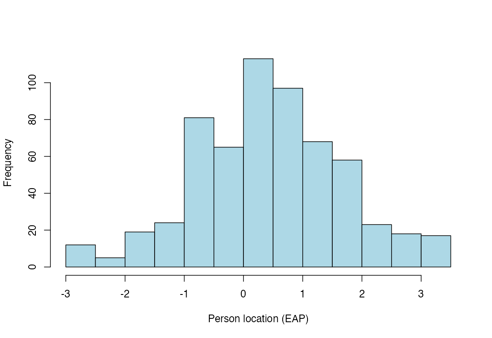
Figure 11. Distribution of person locations (EAP)